Parts of your Guitar
Parts of your guitarAs a beginner you might be confused with musical world. It may be seems very much confusing and hard to you. But once you know something about any arena then it surprisingly pretty much simple and may be then music creates your interest to know more and more.
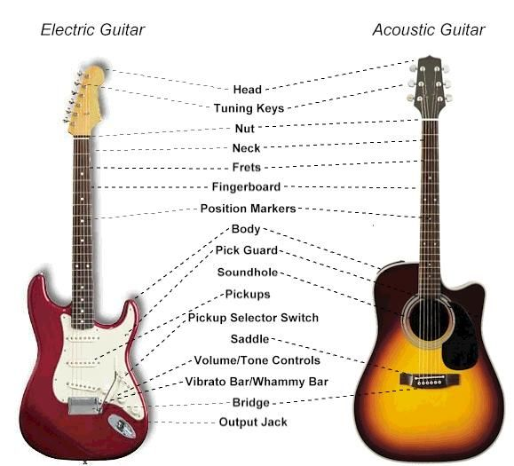As you starts your guitar journey and you have already know how to hold your guitar from previous tutorial, some questions may arise in your back of the mind what is this instrument make for. May be it is not clear to you what are the parts of it? And how they work? Believe me it is so natural to feel puzzling at the beginning. One thing is that you don’t want to know everything but you have to keep a basic knowledge about your instrument and now I’m going to give you a brief demonstration about your guitar.
1. Body
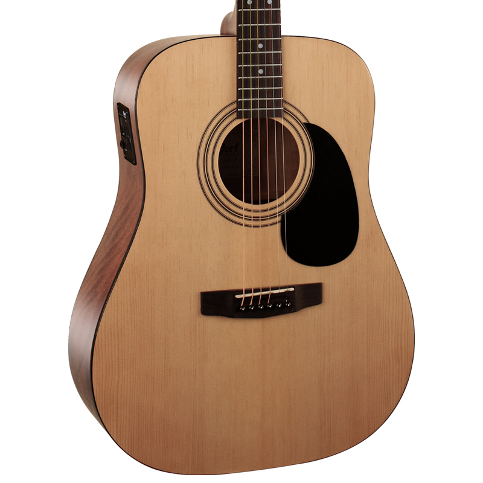It’s the main part of your guitar. Body of a guitar is nothing but a box- solid (electric guitar) or semi hollow (electric guitar) and hollow (acoustic guitar, electric guitar). It lies underneath the strings and at this point you typically strum your strings. The guitar body provides the resonance that shapes the tone of an acoustic or electric guitar. So definitely this is the most important part of your guitar because your guitars sound quality almost depends on the body size, shape and material quality.
The body, I suppose, could be described as the ‘big curvy bit’ of a guitar, which rests against your body when you play, and sits underneath the strings where you typically strum them. On acoustic guitars, the body is hollow, and on electric guitars, they can be hollow, semi-hollow or solid.
2. Neck
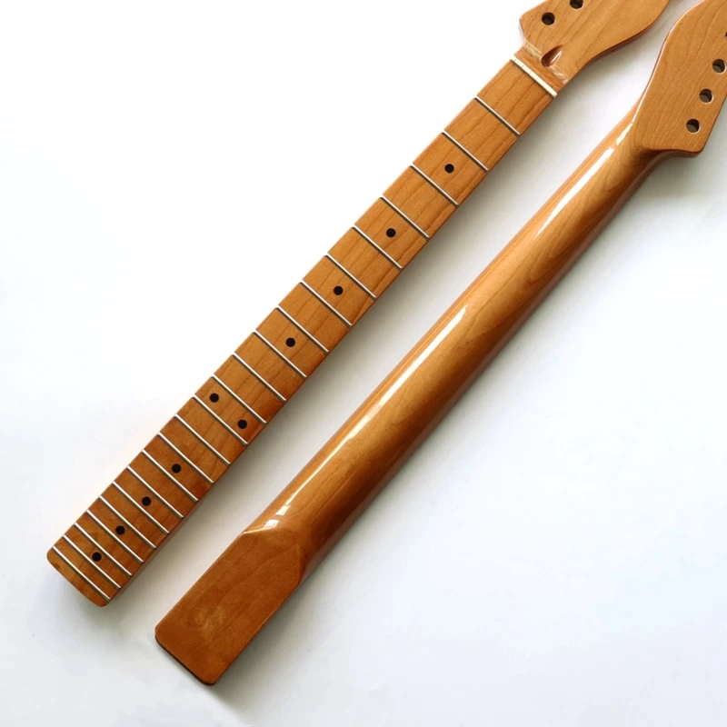Guitar neck is one of the major components of your guitar. It is the longer but thinner part of your guitar and designed in such way that can help you to grip and press your string with left hand.
3. Fingerboard/ Fret board
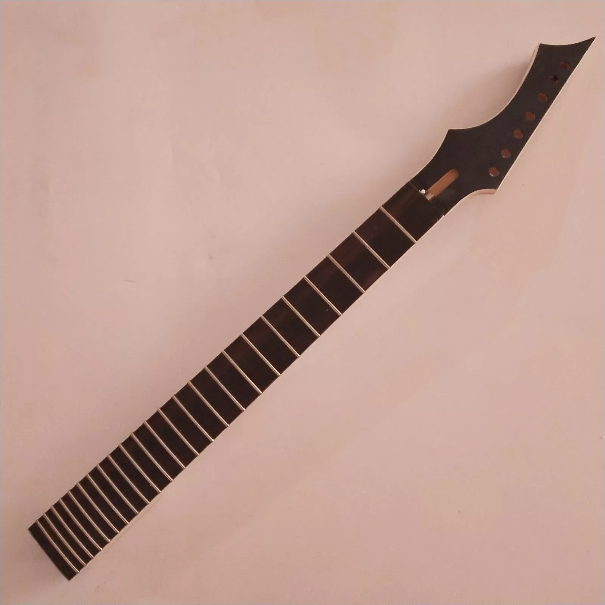This is the area of your guitar neck which is situated just under the string. Your guitar strings run over the fretboard between the nut and bridge. You see this part is marked by metal wire. This is marked in such way that whenever you press your strings in different position the sound produce of different notes.
There are countless materials used for fingerboards, but common woods are maple and rosewood.
4. Frets
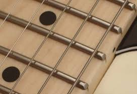These are nothing but materials generally made of alloy, nickel or brass. This frets are embedded in the fingerboards wood along the board’s width. These frets allow you to press guitar strings along the length of the board in so many different positions and thus allows you to play different notes. So fret is working by shortening the string and raises the pitch.
5. Inlays
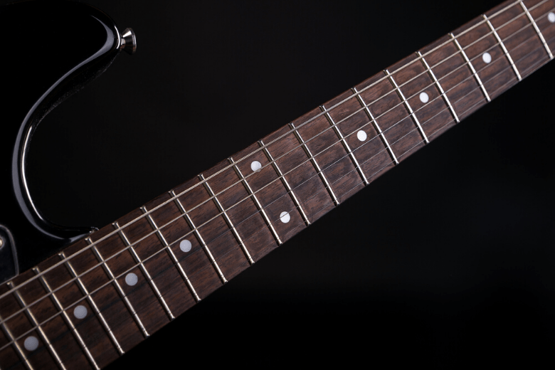Inlays are some markers present in your guitar’s fret board. They could be simple or complex or decorative. Generally these are simple white dot at the point on 3rd, 5th, 7th, 9th and 12th fret. They are present in your fingerboard to indicate you probably which notes you are playing. It makes easy and quick to find a desired note for you.
6. Headstock
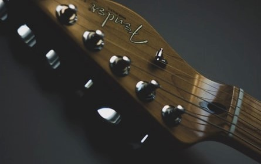It presents at the end you your guitar’s neck. It is the part where all the mechanism presents to hold strings of your guitar. It can be straight or angled. It is the home to the bits you use to tune your guitar.
7. Tuners/ Tuning Pegs/ Machine heads
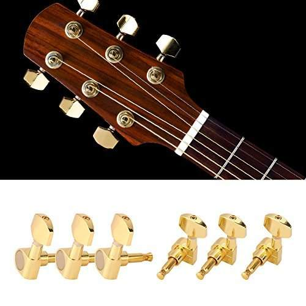These are the small metal parts on your guitar headstock. You can see a flat part are attached on this tuner, this is called as, “the tuning key”. This tuning key is here to twist the tuner for tightening or loosening strings attached to the tuner. Tightening the string means raised the pitch and loosening the string means lowered the pitch of the sound.
8. The Nut
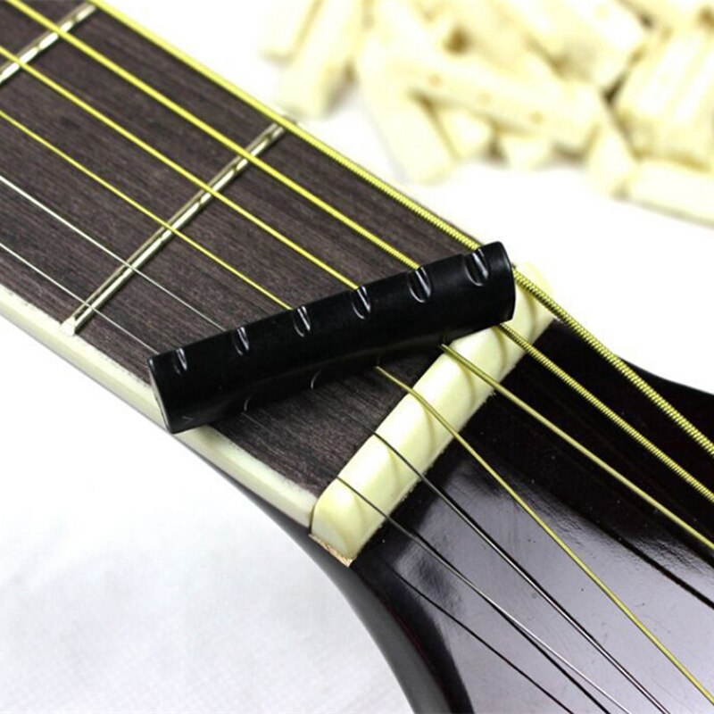This is the meeting point of neck and the headstock. Your guitars string passes through the nut. This nut is a slotted piece of material that allows passing guitar strings. The nut is made of generally plastic, wood or any other material
.So ultimately the nut defines where the playable part of a string ends. So you can measure your string length from the bridge to the nut.
In some guitars like electric guirar you can change the height of your string from fret.
9. Sound hole

It is the large hole present in the acoustic guitar. The sound produces from the hollow box of the guitar and project through the sound hole.
Simply it just amplifies the sound.
10. Bridge
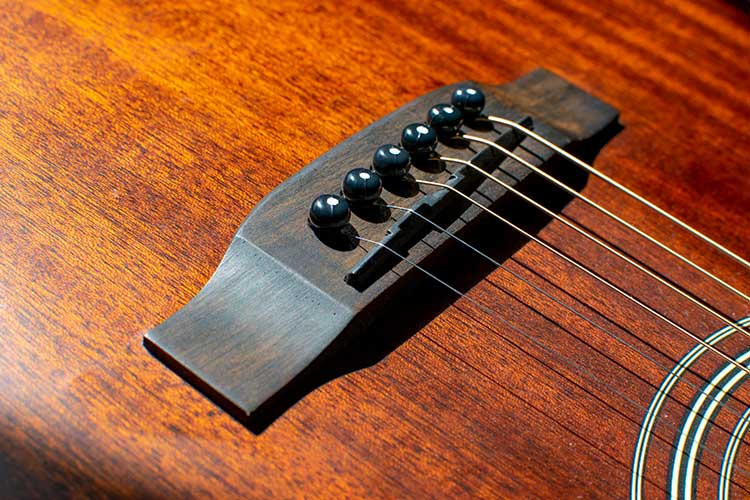The bridge of a guitar is that part through which the strings travel over the guitar body. It acts as a component that supports key as well as transfers the vibrations from strings into the body. In case of acoustic guitar this bridge acts as an amplifier.
In many guitars there is scope for changing the height of bridge that is needed to adjust the string distance from fret. Thus it helps in adjusting the playing action of the guitar.
11. Saddles
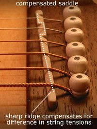Saddles are the piece of plastic or bone or any other material that lodges on the bridge. Saddles lift the guitar strings in a desired height thus and transfer the vibration to the bridge. Thus it acts like the opposite of the nut. Saddles are the one end of your playing string.
In electric guitar normally these saddles can be individually adjustable if they needed. In case of acoustic guitar the saddle is a single piece of material, so in this case it can not possible to adjust individual string.
12. Tailpiece and Bridge pins
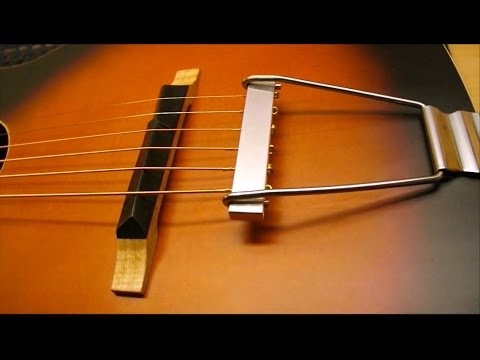
The strings needed to be secured at both ends. Otherwise you cannot play guitar. At the headstock, the strings are attached with the tuners. And at the body the strings have to be secured also. In this part many guitar use bridge pins to attach strings immediately behind the saddle, or other guitar use tailpiece, which sits behind the bridge. Many says that, bridge pin is better because if you use bridge pin to attach the strings then all the tension will go through the bridge, so you will get better sound. On the other hand tailpiece reduces the tension and also cut half of the sounds.
13. Strap Buttons

These are the metal presents in the two end of your guitar to attach the guitar with strap. You know strap is a necessary guitar accessory to support your guitar stability especially when you’re playing in standing position. Strap button position is varying from guitar to guitar.
14. Pickups
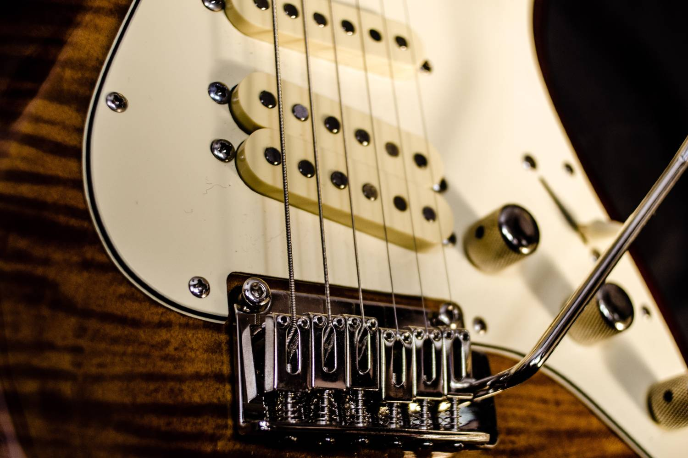Pickups are transducer that senses the vibration of your guitar string and converts the vibration into electric signal. Then these signals can be converted to sound through amplifier. Typically these electric guitar pickups are electromagnetic. A pickup consists of one or more magnet that is permanent and is wrapped with a coil of several thousand turns copper wire.
In guitar these permanent magnets magnetize the strings and therefore produce a magnetic field. When you strum your guitar strings then these magnetic fields moves up and down. Now these moving magnetic fields induce a current in the coil of pickups. So now, your guitar sound is converted into electric signal that is prepared to transfer to an amplifier. In Electric guitar this type of magnetic pickup is attached.
An acoustic guitar has pickup but as a microphone. It may be found as sound-hole pickups or as attach under the guitar saddle and to the body.
15. Pickup selector switch
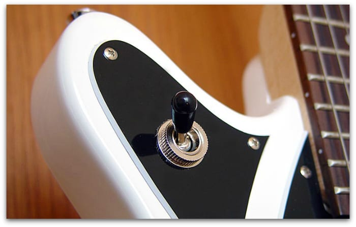You should see there is more than one pickup in electric guitars. And pickup selector is used to switch between multiple pickups or choose multiple pickups at the same time.
Guitar strings have different tone at different positions. So in different position you will get different tone of sound and that’s why various guitars use multiple pickups. Moreover different pickup types have different tones. So obviously pickup selector is needed here that allows to choose pickup from them while playing guitar.
16. Volume and Tone Controls
Volume and tone controls are usually present close to the pickups. There can be separate controls for individual pickups. Actually these are nothing but the knobs where volume knobs control the level of signal coming from the pickups and tone controls adjust how bright that signal is
.Volume knobs can also shape the tone of a guitar by changing the amount of breakup produced by a pickup. Tone knob changes the resistance in the guitar circuit and starts to introduce the influence from a capacitor to send some of the signal to ground.
17. Jack Socket
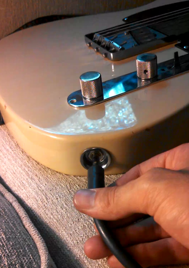Jack socket is the socket which is simply the end of the cable. It is here to connect the guitar with external audio device. In most of the cases electric guitar have mono jack as output. And you will find these mono jacks commonly in both electric and acoustic guitar with passive pickups. And these sockets have only two lugs
.